Chapter 4 Estimation of solar radiation
Incident daily solar radiation is not interpolated, but estimated from topography and measurements of temperature, humidity and precipitation.
4.1 Solar declination and solar constant
The declination of the sun \(\delta\) is the angle between the rays of the sun and the plan of the Earth’s equator. Solar declination varies with years and seasons. However, the Earth’s axial tilt changes slowly over thousands of years but it is nearly constant for shorter periods, so the change in solar declination during one year is nearly the same as during the next year. Solar constant (\(I_0\)) is normally given a nominal value of 1.361 \(kW \cdot m^{-2}\) but in fact it also varies through the year and over years. Both can be calculated from Julian day (\(J\)), the number of days number of days since January 1, 4713 BCE at noon UTC. from Julian day. In meteoland, julian days, solar declination and solar constant are calculated using an adaptation of the code as in package insol by J.G. Corripio, which is based on Danby (1988) and Reda and Nrel (2008).
The following figures show the variation of solar declination and the value of solar constant over a year (see functions radiation_solarDeclination() and radiation_solarConstant()):
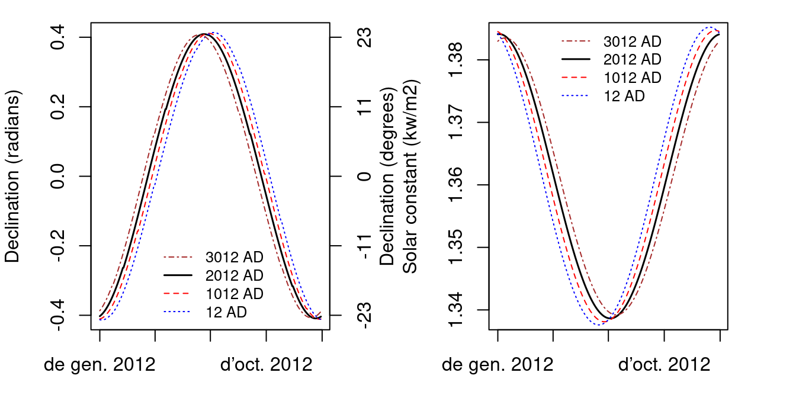
4.2 Day length
Calculation of sunrise and sunset on a horizontal surface is rather straightforward. The hour angles of sunrise and sunset (\(sr\) and \(ss\), both in radians) for a horizontal surface of latitude \(\phi\) on a day with declination \(\delta\) (both expressed in radians) are:
\[\begin{eqnarray}
sr &=& T_1 = \cos^{-1}\left(\max(\min(-\tan(\phi) \cdot \tan(\delta),1),-1)\right) \\
ss &=& T_0 = - T_1
\end{eqnarray}\]
Knowing that each hour corresponds to 15 degrees of rotation, hour angles can be transformed to solar hours. The following figures show the seasonal variation of sunrise and sunset hours, as well as day length, for horizontal surfaces in three latitudes (40North, equator and 40South) (see functions radiation_sunRiseSet() and `radiation_daylength()}):
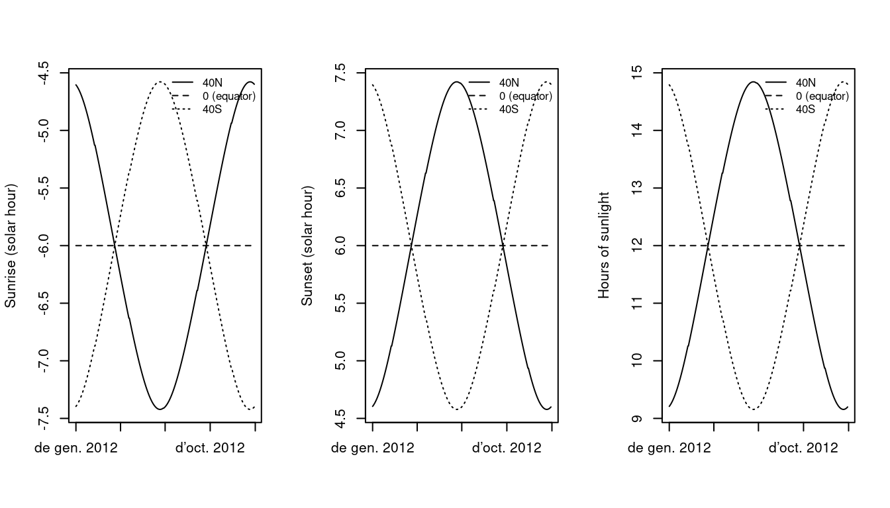
For inclinated slopes, the calculation of day length is based on the concept of equivalent slopes, which are places on earth where the slope of earth’s surface is equal to the slope of interest. The calculations start with the determination of the latitude \(L_1\) of the equivalent slope: \[\begin{eqnarray} L_1 &=& \sin^{-1}\left(\cos(Z_x)\cdot \sin(\phi)+\sin(Z_x) \cdot \cos(\phi) \cdot \cos(A)\right) \\ D &=& \cos(Z_x) \cdot \cos(\phi)-\sin(Z_x) \cdot \sin(\phi) \cdot \cos(A) \end{eqnarray}\] where \(\phi\) is the latitude, \(A\) is the azimuth of the slope (aspect) and \(Z_x\) is the zenith angle of the vector normal to the slope (equal to the slope angle). Then \(L_2\) is defined depending on the value of \(D\). If \(D < 0\) then: \[\begin{equation} L_2 = \tan^{-1}\left(\frac{\sin(Z_x) \cdot \sin(A)}{D}\right)+\pi \end{equation}\] Otherwise, \(L_2\) is calculated as: \[\begin{equation} L_2 = \tan^{-1}\left(\frac{\sin(Z_x) \cdot \sin(A)}{D}\right) \end{equation}\] Once \(L_1\) and \(L_2\) are available, we can calculate solar hours on equivalent slopes: \[\begin{eqnarray} T_7 &=& \cos^{-1}\left(\max(\min(-\tan(L_1) \cdot \tan(\delta), 1),-1)\right)-L2 \\ T_6 &=& - \cos^{-1}\left(\max(\min(-\tan(L_1) \cdot \tan(\delta), 1),-1)\right) -L2 \end{eqnarray}\] Being \(T_6\) and \(T_7\) the hour angle of sunrise and sunset on equivalent slopes, respectively. and the hour angles of sunrise (\(sr\)) and sunset (\(ss\)) on the slope (both in radians) are found comparing the hour angles on equivalent surfaces with the hour angles on the horizontal surface: \[\begin{eqnarray} sr &=& \max(T_0,T_6) \\ ss &=& \min(T_1,T_7) \end{eqnarray}\]
The following three figures show the seasonal variation of sunrise and sunset hours, as well as day length, for slopes of 30 inclination, facing to the four cardinal points. Curves for flat surfaces are shown for comparison. If the slopes are at latitude 40North:
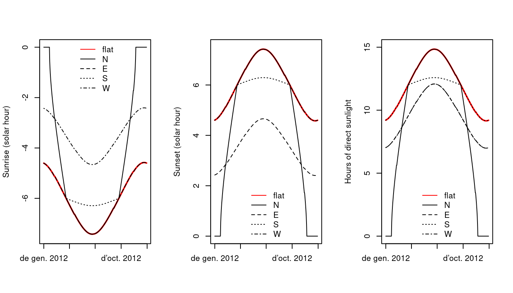
whereas if they are at Equator (i.e. \(\phi = 0\)):
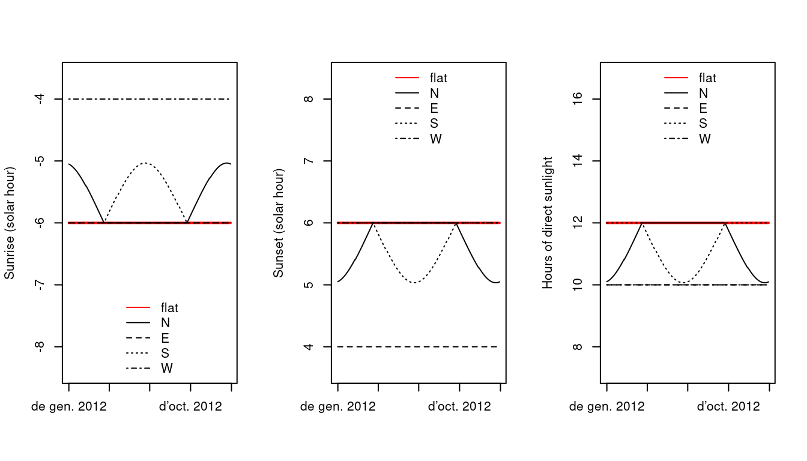
and if they are at latitude 40South:
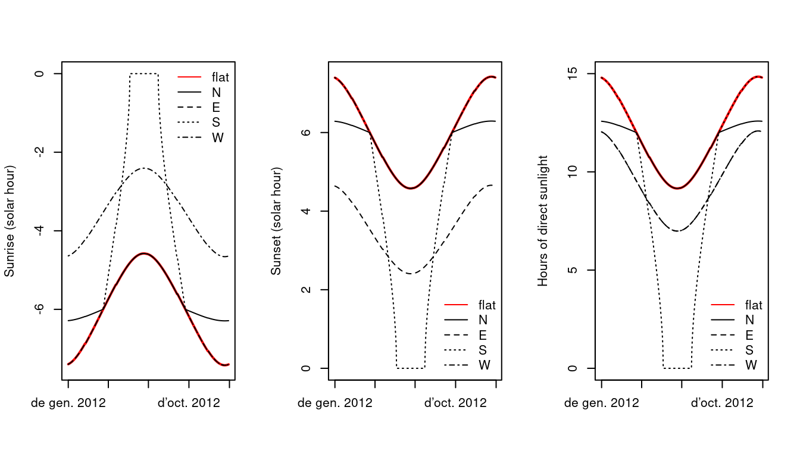
4.3 Potential radiation
Potential solar radiation is the radiation that a surface on earth would receive if atmosphere was not present (i.e. without the effects of cloud reflection, scattering, …). In meteoland, potential solar radiation is estimated from solar declination, latitude, aspect and slope according to Garnier and Ohmura (1968). Daily potential radiation (\(R_{pot}\), in \(MJ \cdot m^{-2}\)) is calculated by integrating instantaneous potential radiation \(R_{pot,s}\) (in \(kW \cdot m^{-2}\)) over the day between sunrise (\(sr\)) and sunset (\(ss\)), using 10 min (i.e. 600 sec) intervals: \[\begin{equation} R_{pot} = \frac{1}{1000}\cdot \sum_{s = sr}^{ss}{600 \cdot R_{pot,s}} \end{equation}\] In turn, instantaneous potential solar radiation \(R_{pot,s}\) is calculated using: \[\begin{eqnarray} R_{pot,s} &=& I_0 \cdot [(\sin{\phi}\cdot \cos{H})(-\cos{A}\cdot \sin{Z_x}) -\sin{H}\cdot (\sin{A}\cdot \sin{Z_x}) \nonumber \\ & & + [(\cos{\phi}\cdot \cos{H})\cdot \cos{Z_x}]\cdot \cos{\delta} \nonumber \\ & & + [\cos{\phi}\cdot (\cos{A}\cdot \sin{Z_x})+ \sin{\phi}\cdot \cos{Z_x}]\cdot \sin{\delta}] \end{eqnarray}\] where \(I_0\) is the solar constant, \(\phi\) is the latitude, \(H\) is the hour angle measured from solar noon, positively towards the west, \(A\) is the azimuth of the slope (aspect), \(Z_x\) is the zenith angle of the vector normal to the slope (equal to the slope angle) and \(\delta\) is the sun’s declination. Note that in the case of a flat surface the previous equation reduces to: \[\begin{equation} R_{pot,s} = I_0 \cdot [\cos{\phi}\cdot \cos{H}\cdot \cos{\delta} + \sin{\phi}\cdot \sin{\delta}]= I_0 \cdot \sin{\beta} \end{equation}\] where \(\beta\) is called the solar elevation angle.
The following figures illustrate seasonal variation of potential solar radiation for the horizontal inclinated surfaces presented above (see function radiation_potentialRadiation()):
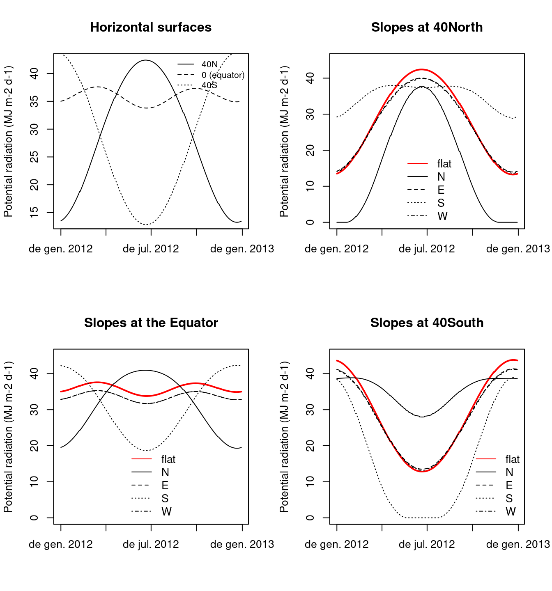
4.4 Incident solar radiation
Incident solar radiation is the amount of (direct) solar radiation reaching the surface after accounting for the atmosphere. Improving the method proposed in Peter E. Thornton, Running, and White (1997), P. E. Thornton and Running (1999) calculate incident daily total solar radiation \(R_{g}\) as: \[\begin{equation} R_g = R_{pot} \cdot T_{t,max} \cdot T_{f,max} \end{equation}\] where \(T_{t,max}\) is the maximum (cloud-free) daily total transmittance and \(T_{f,max}\) is the proportion of \(T_{t,max}\) realized on a given day (cloud correction). The maximum daily total transmittance \(T_{t,max}\) is estimated as: \[\begin{equation} T_{t,max} = \left[\frac{\sum_{s = sr}^{ss}{R_{pot,s} \cdot \tau^{(P_z/P_0)\cdot m_{\theta}}}}{\sum_{s = sr}^{ss}{R_{pot,s}}}\right] + (\alpha_{e_p} \cdot {e_p}) \end{equation}\] where \(\tau = 0.87\) is the instantaneous transmittance at sea level, at nadir, for a dry atmosphere; \({e_p}\) is the actual water vapor pressure (in kPa), estimated as explained before; \(\alpha_{e_p} = -6.1\cdot 10^{-2}\)kPa\(^{-1}\) is a parameter describing the effect of vapour pressure on \(T_{t,max}\); \(m_{\theta} = 1/\cos{\theta}\) is the optical air mass at solar zenith angle \(\cos(\theta) = \sin{\phi}\cdot \sin{\delta}+\cos{\phi}\cdot \cos{\delta} \cdot \cos{H}\); and \(P_z/P_0\) is the ratio between air pressure at elevation \(z_p\) and air pressure at the sea level, calculated as: \[\begin{equation} (P_z/P_0) = (1.0 -2.2569\cdot 10^{-5}\cdot z_p)^{5.2553} \end{equation}\] In turn, \(T_{f,max}\) was empirically related to \(\Delta T = T_{\max} - T_{\min}\), the difference between maximum and minimum temperatures for the target point: \[\begin{equation} T_{f,max} = 1.0 - 0.9\cdot e^{-B \cdot {\Delta T}^{C}} \end{equation}\] being \(C = 1.5\) and \(B\) calculated from: \[\begin{equation} B = b_0 + b_1 \cdot e^{-b_2 \cdot {\hat{\Delta T}}} \end{equation}\] with \(b_0 = 0.031\), \(b_1 = 0.201\) and \(b_2 = 0.185\). In this last equation, \(\hat{\Delta T}\) is a 30-day moving average for the temperature range \(\Delta T\). For computational reasons, we do not estimate \(\hat{\Delta T}\) from the 30-day moving window average of predicted \(\Delta T\) values, but from the interpolation of pre-calculated \(\hat{\Delta T}\) values in weather stations. On wet days (i.e. if \(P_p > 0\)) the estimation of \(T_{f,max}\) is multiplied by a factor of \(0.75\) to account for clouds.
Although the calculation of incident solar radiation can be done independently of interpolation (see function radiation_solarRadiation()), it is automatically done in functions interpolationpoints() and interpolationgrid().
4.5 Outgoing longwave radiation and net radiation
Potential and actual evapotranspiration calculations require estimating the energy actually absorved by evaporating surfaces. Daily net radiation \(R_n\) (in \(MJ\cdot m^{-2}\cdot day^{-1}\)) is calculated using: \[\begin{equation} R_n = R_s\cdot (1 - \alpha) - R_{nl} \end{equation}\] where \(R_s\) is the input solar radiation (in \(MJ\cdot m^{-2}\cdot day^{-1}\)), \(\alpha = 0.08\) accounts for surface albedo, and \(R_{nl}\) is the net longwave radiation. Outgoing longwave radiation is the radiation emitted by earth. Following McMahon et al. (2013) to obtain \(R_{nl}\) one first calculates clear sky radiation \(R_{so}\) using: \[\begin{equation} R_{so} = (0.75 + \cdot 0.00002 \cdot z) \cdot R_{pot} \end{equation}\] where \(z\) is elevation and \(R_{pot}\) is potential radiation. \(R_{nl}\) is then calculated using: \[\begin{equation} R_{nl} = \sigma \cdot (0.34 - 0.14 \cdot \sqrt{e}) \cdot \frac{T_{\max}^4 + T_{\min}^4}{2} \cdot (1.35 \cdot \min(\frac{R_s}{R_{so}},1.0) - 0.35) \end{equation}\] where \(e\) is the actual vapor pressure (kPa), \(T_{\max}\) and \(T_{\min}\) are the maximum and minimum temperatures (in Kelvin) and \(\sigma = 4.903\cdot 10^{-9} MJ \cdot K^{-4} \cdot m^{-2}\) is the Stephan-Boltzmann constant.
The following figure shows an example of radiation balance for a whole year for a single site (see functions radiation_outgoingLongwaveRadiation() and radiation_netRadiation()):
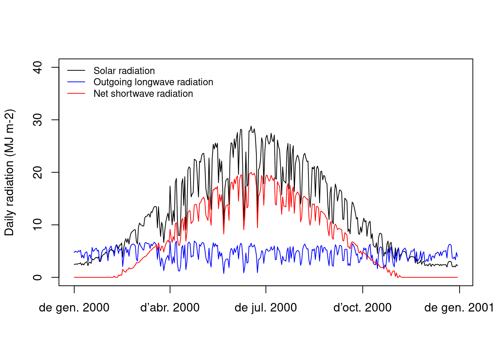
4.6 Diurnal trends in diffuse and direct radiation
Ecological studies sometimes require radiation information at a subdaily scale. This is particularly true for modeling studies that need to calculate canopy photosynthesis. Although meteoland has been designed to assist studies requiring meteorological data at daily scale, a function called radiation_directDiffuseDay() is provided to divide daily radiation into instantaneous direct and diffuse radiation. Values of instantaneous direct and diffuse radiation (shortwave and photosynthetic active radiation) are calculated following Spitters, Toussaint, and Goudriaan (1986). First, the ratio between daily diffuse and global radiation (\(R_{d}/R_{g}\)) is inferred from the ratio between daily potential and global radiation (\(R_{g}/R_{pot}\)):
\[\begin{eqnarray}
R_{d}/R_{g} = 1 & & R_{g}/R_{pot}<0.07\\
R_{d}/R_{g} = 1-2.3\cdot (R_{g}/R_{pot}-0.7)^2 & & 0.07\leq R_{g}/R_{pot} <0.35\\
R_{d}/R_{g} = 1.33-1.46\cdot R_{g}/R_{pot} & & 0.35\leq R_{g}/R_{pot} <0.75\\
R_{d}/R_{g} = 0.23 & & 0.75\leq R_{g}/R_{pot}
\end{eqnarray}\]
In a clear day (e.g. not rainy) the ratio is modified to account for the circumsolar part of diffuse radiation:
\[\begin{equation}
R'_{d}/R_{g} = \frac{R_{d}/R_{g}}{1+(1- (R_{d}/R_{g})^2)\cdot \cos^2(\pi/4-\beta)\cdot \cos^3\beta}
\end{equation}\]
where \(\beta\) is the solar elevation angle. Otherwise \(R'_{d}/R_{g} = R_{d}/R_{g}\). The daily diffuse shortwave radiation (\(R_{d}\)) is found by multiplying global radiation by the (modified) ratio:
\[\begin{equation}
R_{d} = R_{g} \cdot (R'_{d}/R_{g})
\end{equation}\]
The diurnal trend of the irradiance is derived from the daily global radiation and the daily course of potential (i.e. extra-terrestrial) radiation. If we assume that the atmospheric transmission is constant during the daylight period:
\[\begin{equation}
R_{g,s}/R_{pot,s} =R_{g}/R_{pot}
\end{equation}\]
this leads to an estimation of the instantaneous global radiation (assuming compatible units):
\[\begin{equation}
R_{g,s} = R_{g}\cdot (R_{pot,s}/R_{pot})
\end{equation}\]
and the instantaneous diffuse and direct beam fluxes are estimated using:
\[\begin{eqnarray}
R_{d,s} &=& R_{d}\cdot (R_{pot,s}/R_{pot}) \\
R_{b,s} &=& R_{g,s} - R_{d,s}
\end{eqnarray}\]
The whole procedure to calculate direct and diffuse radiation depends on the solar elevation angle, which changes through the day. Although \(R'_{d}/R_{g}\) is formulated as a ratio of daily values, the ratio needs to be calculated for every instant, as \(R_{pot,s}\).
The procedure for photosynthetic active radiation (PAR) is similar. Daily PAR is assumed to be half of daily global radiation (i.e. \(R_{PAR} = 0.5 \cdot R_{g}\). The scattered diffuse component of PAR is bigger than that of global radiation, and the ratio of diffuse over total PAR radiation is: \[\begin{equation} R_{PAR,d}/R_{PAR} = \left[1+0.3 \cdot (1- (R_{d}/R_{g})^2)\right]\cdot (R'_{d}/R_{g}) \end{equation}\] The ratio \(R_{PAR,d}/R_{PAR}\) is used to determine daily diffuse PAR and the calculation of instant rates are the same as for global radiation.
To illustrate the above calculations, we assume a target location in a flat terrain located at 42ºN latitude and 100 m.a.s.l, having 7.2 MJ·m\(^{-2}\) of daily global radiation on the 2001/January/15 in a clear day, the hourly variation in solar elevation, potential/global radiation and diffuse/direct light for PAR and SWR would be:
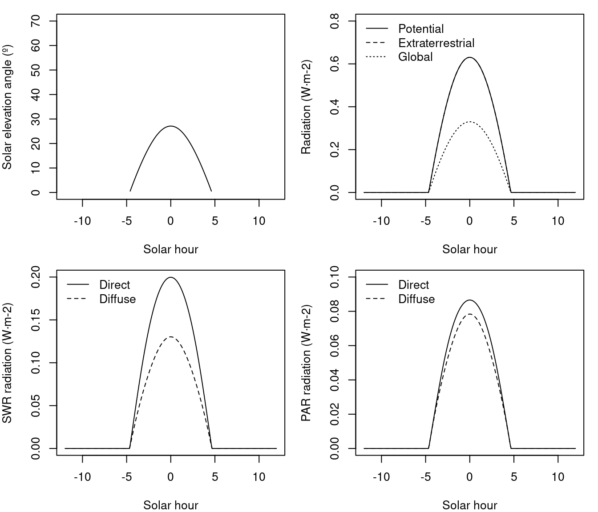
For a flat surface, the extraterrestrial radiation is the same that potential radiation, so that direct and diffuse light start and end at the same hours. If the same plot was on a north-facing slope of 10 degrees the daily global radiation would be 4.06 \(MJ \cdot m^{-2}\) and the extraterrestrial radiation is larger than potential (i.e., accounting for topography) radiation, which has been reduced because of the orientation of the slope:
In this situation, diffuse light should follow extraterrestrial radiation hours whereas direct light should follow potential radiation hours. Finally, if the same plot was on a north-facing slope of 30 degrees the daily global radiation would be 1.96 \(MJ·m^{-2}\) and potential radiation would be 0. In this situation all radiation should correspond to diffuse radiation:
Let us now set the date to 15th of june, the flat surface would receive 27.7 \(MJ·m^{-2}\) divided into:
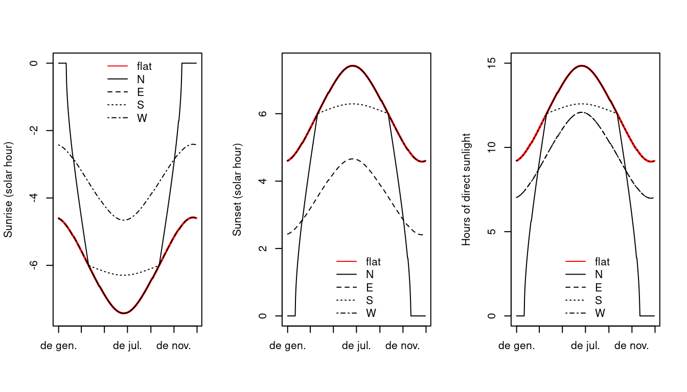
whereas the 10 degree north-facing slope would receive 27.3 \(MJ·m^{-2}\) divided into:
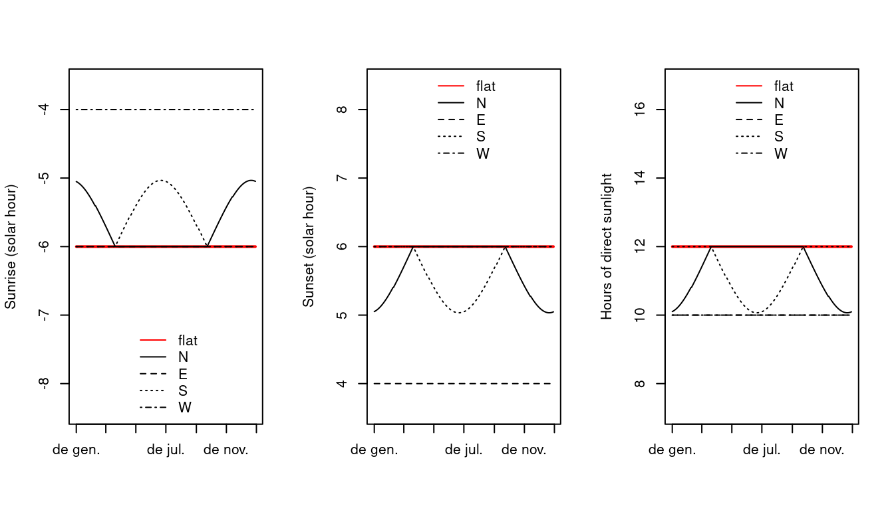
and the 30 degree slope would have 24.2 \(MJ·m^{-2}\) and a repartition:
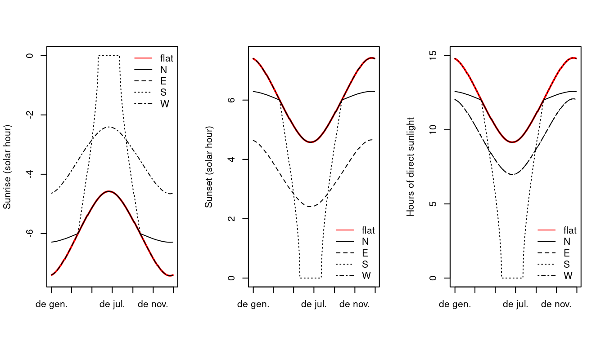